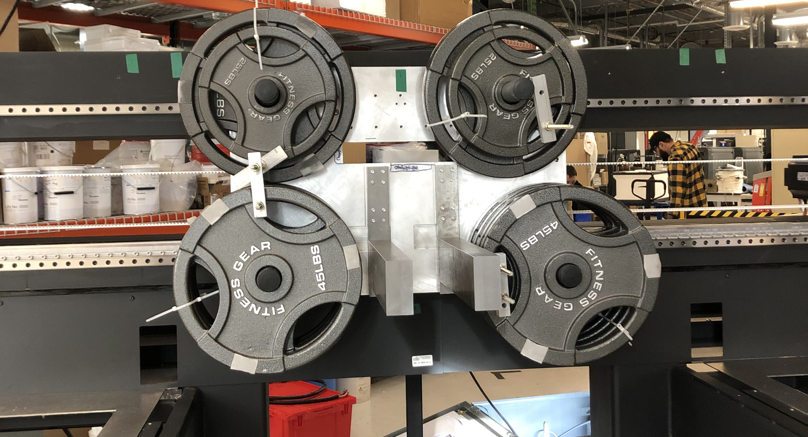

PORTFOLIO
Desktop Metal
JAN – JUN 2020
At Dekstop Metal, I was a part of the SPJ R&D team. I collaborated with other
engineers on the team to work on the carriage of one of the printers. I created excel
worksheets to output viable sizes for building materials based on different constriants.
I then utilized these options to create ideal fixtures to simulate the center of gravity
with both the correct location and mass.
I performed exhuastive research on a key factor and created fixtures designed to
mitigate the influence of said factor. I also designed tests to prove whether or not
said factor was going to be a problem, or if it could be ignored. I also designed
several other testing fixtures and rigs to test different elements, systems, and parts
of the printer in order to valdiate design deciscions.
For every fixture I designed, I created professional drawings following ANSI GD&T
standards. I also hosted several design reviews for some of them and got feedback
from different engineers on the team.
I also spearheaded the organization of different components across different teams.
I organized meetings and brought people together in order to verify that components
were up to date and agreed upon by all parties. In the end, I created a living spreadsheet
that houses hundreds of parts with extensive labeled specifications across mutiple teams.
Nova Biomedical
JAN – JUN 2019
During my time at Nova Biomedical, I worked on many various tasks utltilzing and further developing
many unique skills.
I performed numerous validations on different machinery in the building. I also worked on different
tests and performed statistical analysis in order to locate the source of an on-going problem
in the production process of a fixture.
I studied the assembly process of component and was able to pin-point critical points where time
and money could be saved. I also worked on projects such as the tube stretcher (seen right) which
also saved both extensive amounts of time and money.
I also became very familiar with various different forms of engineering documentation. I wrote numerous
forms and documents such as ECOs, AP's, TP's, OP's, and OI's.
Baja SAE
SEP 2017 – PRESENT
Since this May, I have been the Chassis 2WD Team Lead and have been responsible for the completion of
the frame. I have hosted meetings and spent countless hours in SolidWorks working on finishing what
part of the frame was passed on to me. Recently, the points where the suspension and drivetrain connect
to the the chassis are being modified. They will now be moved to different locations and I will be
working to make the necessary edits to the frame to allow for the new connection points.
Sophmore year I spent my summer on the chassis sub-team where I undertook the task of running a Torsional test
on an older frame. This test was something
I spent my freshmen and the better part of my sophmore years on the team down in the machine shop
spending countless hours machining many different parts across different machines. I can TIG weld,
comfortably use a milling machine, lathe, and many other machines as well as hand tools.
I also have performed maintance on the car including swapping out broken parts for replacements
and bleeding brakes.
Center of Mass
(Getting Replaced)
One of the many challenges I faced at Desktop Metal, was modeling the weight of the carriage of
the printer. The weight needed to be repsented accurately, both in terms of mass and center
of gravity. The given time was very short as the motor was going to be calibrated within a couple
weeks. While I was able to create models in order to acheive this goal within the set time,
the problem came with the quoted lead time. While it was possible to be rushed, we didn't
wan't to go that route unless absolutely neccessary. The first step I took was disregarding
the C.O.G. and instead just focusing on mass. I managed to create mockups using an excel
sheet to give possible combinations given a mass and only using standard steel sizes.
Although it was possible, the distributors nearby did not have the required steel in stock.
The end solution was buying barbell plates from a store and attaching them with cylinders
and zipties. While not ideal, it allowed the motor to be calibrated accurately enough
until the real weights would be made.
Tube Stretcher
The tube stretcher was designed as certain tubes needed to be pre-stretched in border
for them to work as designed. In the past, they had been stretched by hand and it wasted
both time and money. I was tasked with creating a semi-automatic tube stretcher. I worked
with both a fellow co-op to come up with the design, as well as an electrical engineer
to help set up the wiring properly. The machine needed to not only stretch the tubes to the
approriate length, but it needed to be designed to both be simple to use, and effiecent.
The result was the design above. It can stretch 12 tubes at once and has a built in fail safe
to prevent it from stretching too much in either direction. This allows the user to be able
to walk away while it operates, if necessary. In the end, it was much faster and allowed for
time savings in the manufacturing process.
Torsional Test

One of the biggest challenges I undertook during my time on the Baja team, was designing
and executing the Torsional Test. The Torsional Test was something the team had been
trying to perform for several years at that point. I decided to take control of it
and see it through. The goal was to compare the results of a physical test on an older
frame (pictured above) to a simulation in SolidWorks FEA in order to validate that what
is being seen in the simulations matches what the team sees in real life performance. I
first had to perform a great deal of research to determine both what a Torsional test
consisted off, and the best way to perform one. I looked at the results of a Formula SAE
teams's torsional test and applied the concepts to our frame. I then finished creating the
inital design rig and performed the physical test to a mockup in SolidWorks. The result
was that the two tests were not as similar as the team had hoped. We are now looking into
using different software such as ANSYS to see if we can get the answers we are looking for.